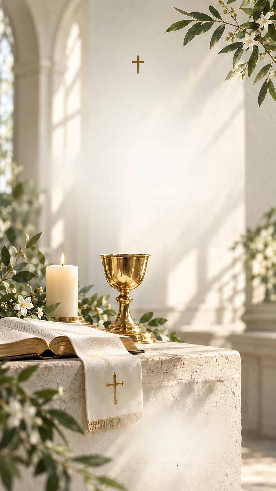
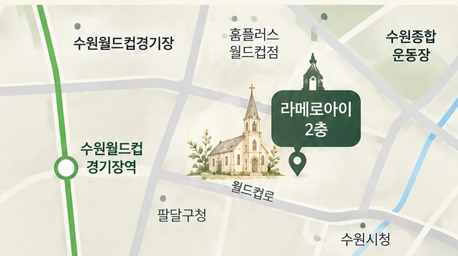

사제수품식
2026년 12월 4일(금) 오후 2시
수원교구 정자동 주교좌 성당
유튜브 중계 · 교구 홈페이지

이창준 다니엘
여러분을 초대합니다
2026. 12. 04. (금)
오후 6시
하느님의 은총과 여러분의 기도 안에서
저희 아들 이창준 다니엘이
사제품을 받게 되었습니다.
오늘이 있기까지 따뜻한 사랑과 기도로
함께해 주신 모든 분께 진심으로 감사드리며,
축하연에 모시고자 합니다.
귀한 걸음으로 자리를 빛내주시면
큰 기쁨이 되겠습니다.
“너는 두려워하지 마라.(이사 41,10)
내가 너와 함께 있다.”
아버지 이대원 · 어머니 강정현 올림
2026년 12월 4일(금) 오후 2시
수원교구 정자동 주교좌 성당
유튜브 중계 · 교구 홈페이지
2026년 12월 4일(금) 오후 6시
수원월드컵경기장 라메르아이 2층
경기 수원시 팔달구 월드컵로 310
2026년 12월 6일(주일) 오전 10시
수원교구 영통성령성당
소중한 발걸음으로 함께해 주시면
큰 기쁨이 되겠습니다.

수원월드컵경기장 라메르아이 2층
경기 수원시 팔달구 월드컵로 310방문 전 지도에서 위치와 이동 경로를 확인해 주세요.
여러분의 소중한 마음,
기도와 사랑으로 기억하겠습니다.
감사합니다.
함께해 주시는 모든 분들의
기도와 축복이
다니엘의 사제의 길에
큰 힘이 될 것입니다.
귀한 걸음으로
함께해 주시길 기다리겠습니다.
아버지 이대원 · 어머니 강정현 올림
WITH SINCERE THANKS